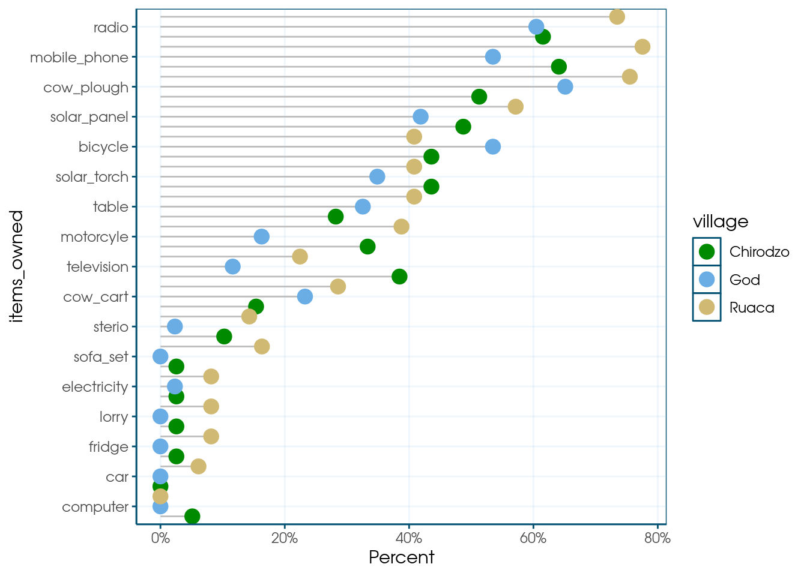

3. Power Analysis using DeclareDesign
There’s a lot that goes into research design, but here we focus on one thing that can be done well in R: power calculations. For this, I love DeclareDesign, a system to simulate Research Designs. Essentially, rather than plugging some parameters into a power calculator, you simulate your research and so investigate the statistical properties of your design. This is great, because it is often hard to include things like clustering and covariates in standard power calculators, and it forces you to be explicit about what you expect about your research.
This chapter will only scratch the surface of what you can do, so I really recommend further learning about DeclareDesign:
- Slides by the authors of DeclareDesign: Graeme Blair, Alex Coppock, Macartan Humphreys
- The DeclareDesign CheatSheet
- The book Research Design in the Social Sciences: Declaration, Diagnosis, and Redesign
Read at least the slides before going forward!
This chapter covers power calculations in three designs: a simple comparison of means, a diff-in-diff design, and a matching design. To start of, we need example data. You can simulate this, but I prefer using existing data. Here we use Rhomis data.
Simple Power Calculation
The first design we consider is simply a comparison of means. We are interested in the effects of a project on the input of fertilizers.
Loading data
Here we take the Rhomis data, and add some variables. (For example, village codes: I create fake ones based on y-cooridnates.)
library(tidyverse)
library(DeclareDesign)
library(here)
n_clusters = 18
rhomis <-
read_csv(here("data/RHoMIS_Indicators.csv")) %>% #names()
filter(Country == "Burundi") %>% #count(Livestock_Orientation)
# split the sample in villages, by lattitude
filter(!is.na(GPS_LAT)) %>%
arrange(GPS_LAT) %>%
mutate(village = rep(1:n_clusters, each = nrow(.) / n_clusters , length.out = nrow(.))) %>%
# create some variables
mutate(HFIAS_status = factor(HFIAS_status, levels = c("FoodSecure", "MildlyFI", "ModeratelyFI", "SeverelyFI")),
food_secure = 1 * (as.numeric(HFIAS_status) <= 3),
educated = 1*(Head_EducationLevel != "No_school"),
female = 1* (HouseholdType == "woman_single")) %>%
mutate(hh = row_number()) %>%
select(!HFIAS_status) %>%
# there are too many missings in my data; these seem reasonable to assume to be 0 when missing:
mutate(across(c(LandOwned,NFertInput,educated),
~ if_else(is.na(.x),0,.x))) %>%
select(village, hh, NFertInput, food_secure, educated, LivestockHoldings)Declare Design
Now it’s time to start declaring our design. The first element of the
design is the model, using declare_model() which essentially is my data.
declare_model() follows the syntax of fabricate():
a package that is part of the DeclareDesign ecosystem that allows you to generate fake data.
In this syntax, instead of using mutate() we can just supply new variables
after a comma.
In this case, I add potential outcomes, using potential_outcomes():
effect_size_simple <- 70
model_simple <-
declare_model(
rhomis %>% select(village, NFertInput),
potential_outcomes(Y ~ NFertInput + Z * effect_size_simple)
)The potential outcomes are generated using potential_outcomes().
This will create two variables Y_Z_1 and Y_Z_0, which are
the potential outcomes if having received treatment (Z == 1) or not.
The difference between these is the effect size, which we assume to be 70 kg,
we store this in a variable, so we can play with it later on.
Note that I will generate Z in the next step.
Then it’s time to think about assignment. I do a clustered randomization, based on the villages:
Next, I declare my theoretical quantity of interest is the treatment effect in year 1. This is basically my research question.
Since I won’t be able to observe Y_Z_1 for the control group, nor Y_Z_0 for the treatment group,
I will need an estimation strategy.
The below arguments will be put into lm_robust by default,
and the term argument determines which coefficient is our estimate of interest:
estimator_simple <-
declare_estimator(Y ~ Z,
clusters = village,
inquiry = "ATE",
term = "Z",
label = "Simple")Finally, I combine all these elements to declare my design. Note that it’s only here that R starts actually running the code to randomize things. The previous was just declaration!
design_simple <- model_simple + assignment_simple + inquiry_simple + measurement_simple + estimator_simple
summary(design_simple)##
## Research design declaration summary
##
## Step 1 (model): declare_model(rhomis %>% select(village, NFertInput), potential_outcomes(Y ~ NFertInput + Z * effect_size_simple))
##
## N = 290
##
## Added variable: village
## min median mean max sd N_missing N_unique
## 1 9 9.44 18 5.23 0 18
##
## Added variable: NFertInput
## min median mean max sd N_missing N_unique
## 0 16 72.71 7500 465.79 0 44
##
## Added variable: ID
## N_missing N_unique class
## 0 290 character
##
## Added variable: Y_Z_0
## min median mean max sd N_missing N_unique
## 0 16 72.71 7500 465.79 0 44
##
## Added variable: Y_Z_1
## min median mean max sd N_missing N_unique
## 70 86 142.71 7570 465.79 0 44
##
## Step 2 (assignment): declare_assignment(Z = cluster_ra(clusters = village, prob = 0.5))
##
## Added variable: Z
## 0 1
## 146 144
## 0.50 0.50
##
## Step 3 (inquiry): declare_inquiry(ATE = mean(Y_Z_1 - Y_Z_0)) -------------------
##
## A single draw of the inquiry:
## inquiry estimand
## ATE 70
##
## Step 4 (measurement): declare_measurement(Y = reveal_outcomes(Y ~ Z)) ----------
##
## Added variable: Y
## min median mean max sd N_missing N_unique
## 0 70 107.46 7500 465.89 0 62
##
## Step 5 (estimator): declare_estimator(Y ~ Z, clusters = village, inquiry = "ATE", term = "Z", label = "Simple")
##
## Formula: Y ~ Z
##
## A single draw of the estimator:
## term estimator estimate std.error statistic p.value conf.low conf.high
## Z Simple 37.51508 60.69784 0.6180628 0.5452394 -91.16763 166.1978
## df outcome inquiry
## 15.98618 Y ATEDiagnosing Design and calculating power
If you want to browse a version of the data created by your design,
use the draw_data() function. This is useful to examine the properties of the data.
## # A tibble: 290 × 7
## village NFertInput ID Y_Z_0 Y_Z_1 Z Y
## <int> <dbl> <chr> <dbl> <dbl> <int> <dbl>
## 1 1 5 001 5 75 1 75
## 2 1 26 002 26 96 1 96
## 3 1 40 003 40 110 1 110
## 4 1 0 004 0 70 1 70
## 5 1 10 005 10 80 1 80
## 6 1 25 006 25 95 1 95
## 7 1 25 007 25 95 1 95
## 8 1 60 008 60 130 1 130
## 9 1 0 009 0 70 1 70
## 10 1 0 010 0 70 1 70
## # ℹ 280 more rowsNow to calculate our power. The diagnose_design() will run our
model 500 times and our power is simply the fraction of times we
find a statistically significant effect.
##
## Research design diagnosis based on 500 simulations. Diagnosis completed in 5 secs. Diagnosand estimates with bootstrapped standard errors in parentheses (100 replicates).
##
## Design Inquiry Estimator Outcome Term N Sims Mean Estimand
## design_simple ATE Simple Y Z 500 70.00
## (0.00)
## Mean Estimate Bias SD Estimate RMSE Power Coverage
## 72.34 2.34 60.30 60.29 0.27 1.00
## (2.84) (2.84) (0.82) (0.80) (0.02) (0.00)Our power is 0.23, meaning we found a significant result in 23% of our model runs. That’s way lower than the traditional 80% threshold.
How large should our effect size be to reach a power of 0.8?
We can use the redesign() function for this.
Redesign allows you to vary certain parameters of your design,
and run the design 500 times for each value of the parameter.
Here I set it to run 200 times, as that takes long enough
already.
set.seed(1)
diagnosis_simple <-
design_simple %>%
redesign(effect_size_simple = seq(100,300,50)) %>%
diagnose_design(sims = 200) %>%
tidy() %>%
as_tibble()Now, I want a nice plot.
For this I filter the tibble I created, and pipe it into ggplot():
diagnosis_simple %>%
filter(diagnosand == "power") %>%
select(effect_size_simple,power = estimate) %>%
ggplot(aes(x = effect_size_simple, y = power)) +
geom_line() +
geom_point() +
geom_hline(yintercept=0.8,linetype=2) 
We can reliably detect an effect size between 150 and 200 kgs of fertilizer. The mean fertilizer use is 70kg, so that seems unlikely to be realistic. Perhaps we should add covariates to reduce the standard error?
Dif in diff
Perhaps we can increase power using a diff-in-diff design? If fertilizer input in one year is correlated to the next, this should reduce standard errors and increase power. But then we have to pretend we have two rounds of data collection.
For that, I prefer to use dplyr,
but it should be possible with fabricate() as well.
I first rename all our time-variant varaible to have _0 at the end,
create a bunch of correlated varaibles with _1 at the end, and then pivot_longer.
First, I make a function to make some variation of a given variable,
with correlation coefficient rho.
I like the correlate() function for this, but it can only handle distributions
such as rnorm(), which NFertInput just isn’t.
So what I do is, I transform NFertInput to a normal distribution using
bestNormalize,
the I use correlate to generate a variable that’s correlated to to that normally
distruted version of NFertInput, and transform that back.
library(bestNormalize)
variate_var <- function(x, rho, slope = 1) {
suppressWarnings({
bn <- bestNormalize(x)
x_trans <- bn$x.t
sd_x <- sd(x_trans)
mean_x <- sd(x_trans)
x_new_trans <- correlate(given = x_trans, rho = rho, rnorm, mean = mean_x, sd = sd_x)
x_new <- predict(bn, x_new_trans, inverse = TRUE)
x_new[x_new == Inf] <- mean(x_new[x_new != Inf], na.rm = TRUE)
# correlated is fine, but the slope of the relationship should not be too steep
x_new * (mean(x) / mean(x_new)) * slope
})
}It feels like this shouldn’t be allowed, but it’s fun for now!
I update my design accordingly:
effect_size_dd <- 70
sd_dd <- 100
rho_dd <- 0.7
model_dd <- declare_model(
rhomis %>%
select(village, NFertInput) %>%
# add one more year
rename_with(~ paste0(., "_0"), -village) %>%
mutate(
NFertInput_1 = variate_var(NFertInput_0, rho_dd)
) %>%
pivot_longer(
ends_with(c("_0","_1")),
names_to = c(".value", "t"),
names_pattern = "(.*)_([0-9]+)$",
values_drop_na = TRUE,
names_transform = list(t = as.integer)
),
potential_outcomes(Y ~ NFertInput + Z * effect_size_dd)
)I modify the inquiry and assignment to only take into account t == 1
inquiry_dd <-
declare_inquiry(ATE = mean(Y_Z_1 - Y_Z_0), subset = (t == 1))
assignment_dd <-
declare_assignment(treatment_group = cluster_ra(clusters = village, prob = 0.5),
Z = t * treatment_group)Measurement is unchanged:
Then I use feols()
from the fixest
package to estimate a Two-way fixed effects (2FE) model.
This can be easily extended to more complex
designs (but beware!).
library(fixest)
library(broom)
estimator_dd <-
declare_estimator(Y ~ Z | treatment_group + t,
cluster = "village",
.method = feols,
term = "Z",
inquiry = "ATE",
label = "2FE")The complete design is then:
Let’s have a look at our power now!
Of course, in a DiD setting, power depends not only on the effect size, but also on how well the years correlate.
I therefore also vary the rho_dd variable,
which controls the correlation between fertilizer input in years 0 and 1:
set.seed(1)
diagnosis_dd <-
design_dd %>%
redesign(
effect_size_dd = c(100, 150, 200),
rho_dd = c(0.3,0.7, 0.9)
) %>%
diagnose_design(sims = 100) %>%
tidy() %>%
as_tibble()## Error: object 'design_dd' not foundPutting it in a plot again:
diagnosis_dd %>%
filter(diagnosand == "power") %>%
rename(power = estimate) %>%
mutate(rho_dd = factor(rho_dd)) %>%
ggplot(aes(x = effect_size_dd, y = power, color = rho_dd, shape = rho_dd)) +
geom_line() +
geom_point() +
geom_hline(yintercept=0.8, linetype=2) 
So at high levels of Rho, our power is higher than when using the simple model. The lower rho is, the less added value the diff-in-diff model has.
Matching
Finally, let’s imagine a scenario where treatment isn’t random, but correlated to outcomes, so we would need matching.
Let’s also look at food_secure, since it’s binary, and thus adds a twist here and there.
Also, I will use the resample_data() function to pretend that we can visit
more households than are in my original data set.
Declare Design
The first novel thing is the binary outcome. We want an easy to interpret effect size: a percentage point increase in food secure households. This is a bit trickey: before we just added the effect size to everyone. But for binary variables, we only change a 0 to a 1 for a certain share of the population. Let’s just define that first. The function below flips a certain number of 0s to 1, so that we have a nice effect size:
flip_zeroes <- function(x, Z, effect) {
# how many 1s do we currently have?
n_current_ones <- sum(x[Z == 1])
# how many 1s should we have?
p_current <- mean(x[Z == 1])
p_target <- p_current + effect
n_target_ones <- round(p_target * sum(Z == 1))
# figure out which zeros to flip
n_to_flip <- n_target_ones - n_current_ones
# If nothing to flip, return x
if (n_to_flip <= 0) return(x)
zeros_index <- which(x[Z==1] == 0)
# Can't flip more zeros than exist
n_to_flip <- min(n_to_flip, length(zeros_index))
if (n_to_flip == 0) return(x)
flip_index <- sample(zeros_index, n_to_flip)
# do it, and return the new x
x[Z==1][flip_index] <- 1
x
}Our model then becomes:
Then we do the assignment. This now consists of two steps:
- Communities are assigned randomly, using
cluster_ra() - Households are assigned in a way that is correlated with education and livestock holdings,
(and also food_secure) using
correlate().
rho <- 0.5
assignment_matching <- declare_assignment(
hh_treat = correlate(
given = educated * LivestockHoldings^2,
rho = rho,
raw_binomial,
prob = 0.3
),
vill_treat = cluster_ra(clusters = village, prob = 0.5),
Z = hh_treat * vill_treat
)Then we take an extra step: re-sampling.
Some notes:
- We use
resample_data()to sample more households than are in our original data set. The resulting data set will thus follow the same distribution as our original data, but with more observations. - In treatment communities, we only sample from treated households. In control communities, we don’t know who would have been treated, so we sample randomly.
- We sample a certain number of households per community,
which is a parameter we can vary in our diagnosis.
The number differs between treatment and control communities,
to allow oversampling the control observation to compensate for matching losses.
To do this, we run the
resample_data()function separately for treatment and control communities, using a combination of nest and map2 functions (see here).
communities_per_arm <- 10
respondents_treat <- 10
respondents_control <- 15
resample_hhs <- function(df, communities_per_arm, respondents_treat, respondents_control){
df %>%
filter(vill_treat == 0 | Z == 1) %>%
mutate(respondents = if_else(Z == 1, respondents_treat, respondents_control)) %>%
nest(.by = c(Z, respondents)) %>%
mutate(
data = map2(
data,
respondents,
~resample_data(
.x,
N = c(communities_per_arm,.y),
ID_labels = c("village", "hh"),
unique_labels = TRUE
)
)
) %>%
unnest(data)
}
resampling_matching <- declare_step(
handler = resample_hhs,
communities_per_arm = communities_per_arm,
respondents_treat = respondents_treat,
respondents_control = respondents_control
)Measurement and inquiry are slightly different. I defined my treatment effects as a percentage point increase in food secure households. So if the percentage of food insecure households is very large relative to the effect size, the chance an individual household become food insecure is low. This messes with potential outcomes, as the effect on each individal depends on the means in the treatment group, and thus on the randomization. I therefore skip the potential outcomes, and just define my estimand as the effect size.
effect_size_matching <- 0.1
measurement_matching <-
declare_measurement(
Y = flip_zeroes(food_secure, Z, effect_size_matching)
)
inquiry_matching <- declare_inquiry(ATE = effect_size_matching)Now for the estimators, let’s start with a simple one, with no matching:
estimator_matching_no_matching <-
declare_estimator(Y ~ Z,
inquiry = "ATE",
term = "Z",
label = "Not matched",
cluster= village_unique)Finally, I need to somehow put my matching model in DeclareDesign.
Fortunately, you can put any the output of any function into the declare_estimator() function
using the handler argument.
It does need to accept a data argument,
and output a tidy() dataframe.
My function custom_match() accepts a data frame, uses MatchIt to create
a matched data set,
I define a function that does that, and some labelling:
# the select function would conflict with dplyr
# this syntax requires R 4.0 or higher
library(MatchIt, exclude("select"))
custom_match <- function(data,
equation,
outcome = "Y",
term = "Z",
method = "nearest"){
# the command filter(term == term) wouldn't do anything, so this is a workaround
term_value <- term
# run the matching model
matchit_model <- matchit(equation,
data = data,
method = method)
matched_df <- match.data(matchit_model)
# run a regression, weighted by the propensity score
lm_robust(Y ~ Z, data = matched_df, weights = weights, clusters = village_unique) %>%
tidy() %>%
mutate(outcome = outcome) %>%
filter(term == term_value)
}Then I add two estimator: one that uses PSM (‘nearest’) and one that uses CEM (‘cem’), so that we can compare these two matching methods in our diagnosis.
estimator_matching_psm <- declare_estimator(
Z ~ educated + LivestockHoldings,
handler = label_estimator(custom_match),
inquiry = "ATE", # Tie the estimator to the declared inquiry
label = "Matched PSM",
term = "Z",
)
estimator_matching_cem <- declare_estimator(
Z ~ educated + LivestockHoldings,
handler = label_estimator(custom_match),
inquiry = "ATE", # Tie the estimator to the declared inquiry
label = "Matched CEM",
term = "Z",
method = "cem"
)And let’s combine it into one design!
Checking balance
It’s useful to explore the property’s of our matching estimator. First I draw data based on my design and create matched version of that data.
## Error: Error in step 2 ():
## Error: object 'raw_binomial' not found matchit_model_psm <- matchit( Z ~ educated + LivestockHoldings ,
data = test_data,
method = "nearest",
discard = "both")## Error: object 'test_data' not found## Error: object 'matchit_model_psm' not found matchit_model_cem <- matchit( Z ~ educated + LivestockHoldings,
data = test_data,
method = "cem",
discard = "both")## Error: object 'test_data' not found## Error: object 'matchit_model_cem' not foundThen I create balance table for the test_data:
library(modelsummary)
library(flextable)
# balance table
test_data %>%
mutate(Z = factor(Z, labels = c("Control", "Treatment"))) %>%
select(Z, Y, food_secure, educated, LivestockHoldings) %>%
datasummary_balance( ~ Z , data = .,
output = "flextable", stars = TRUE,
dinm = TRUE, dinm_statistic = "p.value") %>%
fix_border_issues() %>%
autofit()## Error: object 'test_data' not foundAnd for the test_data_psm, which is balanced in terms of the variables we
matched on:
test_data_psm %>%
mutate(Z = factor(Z, labels = c("Control", "Treatment"))) %>%
select(Z, Y, food_secure, educated, LivestockHoldings) %>%
datasummary_balance( ~ Z , data = .,
output = "flextable", stars = TRUE,
dinm = TRUE, dinm_statistic = "p.value") %>%
fix_border_issues() %>%
autofit()## Error: object 'test_data_psm' not foundFor CEM, it’s a bit more complex, as it relies on weighting.
While the [documentation](https://modelsummary.com/reference/datasummary_balance.html#global-options) claimsdatasummary_balance()reports weighted means if aweights` variable is present,
I find this is not the case in the version I use here.
So here’s a custom balance table:
library(flextable)
library(estimatr)
balance_table <- function(data, by){
# get a table with summ stats:
summstats <-
data %>%
select(-weights) %>%
group_by( {{ by }} ) %>%
summarize(
across(
.cols = everything(),
.fns = list(
mean = ~mean(.x,na.rm=TRUE),
sd = ~sd(.x,na.rm=TRUE)
),
.names = "{.col}-{.fn}"
)
) %>%
pivot_longer(cols = -Z,
names_to = c("Variable",".value"),
names_sep="-")
# function to get the difference between treatment and control
get_diffs <- function(equation,
clusters = NULL,
weights = NULL){
reg <-
lm_robust(
equation,
clusters = {{ clusters }},
weights = {{ weights }}
) %>%
broom::tidy()
estimate <- round(reg[2,2],2)
p <- reg[2,5]
stars = case_when(p < 0.001 ~ "***",
p < 0.01 ~ "**",
p < 0.05 ~ "*",
.default = "")
paste0(estimate, stars)
}
# compute differences for all vars:
difcol <-
data %>%
summarize(across(.cols = c(everything(), -Z),
.fns = ~get_diffs(.x ~ Z, weights = weights))) %>%
pivot_longer(cols =everything(),
names_to = "Variable",
values_to="Difference")
# output
summstats %>%
tabulator(
rows = names(summstats)[2],
columns = names(summstats)[1],
datasup_last = difcol,
Mean = as_paragraph(as_chunk(mean, digits=2)),
SD = as_paragraph(as_chunk(sd, digits=2))
) %>%
as_flextable() %>%
#labelizor(j = "Variable", labels = labels, part = "body") %>%
fix_border_issues() %>%
autofit()
}
test_data_cem %>%
select(Z, Y, food_secure, educated, LivestockHoldings, weights) %>%
balance_table(by = Z)## Error: object 'test_data_cem' not foundCEM balances a bit better it seems.
Let’s run the models two times:
## Error: object 'test_data' not found## Error: object 'test_data_psm' not found## Error: object 'test_data_cem' not foundmodelsummary(list(lm = unmatched_model, psm = matched_model_psm, cem = matched_model_cem), output = "flextable",
gof_map = c("nobs","r.squared","adj.r.squared"), stars = TRUE)## Error: object 'unmatched_model' not foundThe true effect is 0.3, so the simple model is actually closest in this case. Of course, this is just for one draw of the data, so let’s see how this looks on average when we run the design many times!
Bias
First, let’s examine bias, given selection effects.
The strength of the selection effect is given by rho,
so I use redesign() to vary it:
set.seed(1)
diagnosis_matching_bias <-
design_matching %>%
redesign(rho = seq(from = 0, to = 0.75, by = 0.25)) %>%
diagnose_design(sims = 100) %>%
tidy() %>%
as_tibble()And I put the result in a plot:
diagnosis_matching_bias %>%
filter(diagnosand == "bias") %>%
select(rho, bias = estimate, estimator) %>%
ggplot(aes(x = rho, y = bias,
shape = estimator, color=estimator)) +
geom_line() +
geom_point() 
It’s clear that while PSM reduced bias, but CEM performed much better.
Power
Then, let’s examine power. I drop the no matching a psm, to save some simulation time.
design_cem <-
model_matching + assignment_matching + resampling_matching + measurement_matching +
inquiry_matching +
estimator_matching_cem
set.seed(1)
diagnosis_matched_power <-
design_cem %>%
redesign(
communities_per_arm = c(5,30,50),
effect_size_matching = c(0.01,0.2, 0.3)
) %>%
diagnose_design(sims = 100) %>%
tidy() %>%
as_tibble()So at 30 communities per arm, our design can pick up an effect of 0.3, but to pick up an effect of 0.2 we should ideally increase our sample.
diagnosis_matched_power %>%
filter(diagnosand == "power") %>%
mutate(effect_size_matching = factor(effect_size_matching)) %>%
select(communities_per_arm, power = estimate, estimator, effect_size_matching) %>%
ggplot(aes(x = communities_per_arm, y = power,
shape = effect_size_matching, color=effect_size_matching)) +
geom_line() +
geom_point() +
geom_hline(yintercept=0.8,linetype=2)